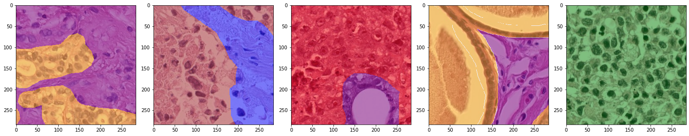
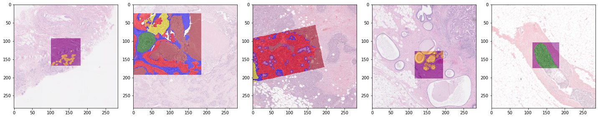

HookNet#
from hooknet.training.trainer import Trainer
from hooknet.model import create_hooknet
from wholeslidedata.iterators import create_batch_iterator
from wholeslidedata.visualization.plotting import plot_batch
from matplotlib import pyplot as plt
import gc
from wholeslidedata.samplers.utils import crop_data
from wholeslidedata.visualization.plotting import plot_mask
def plot_inference(patch, ground_truth, prediction):
colors = ['black', 'red', 'pink', 'purple', 'blue', 'green', 'yellow', 'orange', 'grey']
fig, axes = plt.subplots(1,3, figsize=(10,10))
axes[0].imshow(patch)
plot_mask(ground_truth, axes=axes[1], color_values=colors)
plot_mask(prediction, axes=axes[2], color_values=colors)
plt.show()
Data Loading#
ITERATOR_CONFIG = {
"wholeslidedata": {
"default": {
"seed": 123,
"yaml_source": "/home/user/pathology-whole-slide-data/docs/source/userguide/notebooks/examples/configs/tigersegmentationdata.yml",
"image_backend": 'asap',
'labels': {
"roi": 0,
"invasive tumor": 1,
"tumor-associated stroma": 2,
"in-situ tumor": 3 ,
"healthy glands": 4,
"necrosis not in-situ": 5,
"inflamed stroma": 6,
"rest": 7,
},
"annotation_parser": {
"sample_label_names": ['roi'],
"sorters": ["${$wholeslidedata.annotation.selector.sort_by_area_with_roi}"],
},
"batch_shape": {
"batch_size": 5,
"shape": [[284,284,3],[284,284,3]],
"spacing": [0.5, 8.0],
"y_shape": [2, 284, 284]
},
'point_sampler_name': "RandomPointSampler",
'point_sampler': {
"buffer": {'spacing': "${batch_shape.spacing}", 'value': -(284//2)},
},
}
}
}
mode = 'training'
number_of_batches = 1
cpus=4
with create_batch_iterator(mode=mode,
user_config=ITERATOR_CONFIG,
number_of_batches=number_of_batches, cpus=4) as training_iterator:
for x_batch, y_batch, info in training_iterator:
plot_batch(x_batch[:,0,...], y_batch[:,0, ...], alpha=0.5)
plot_batch(x_batch[:,1,...], y_batch[:,1, ...], alpha=0.5)


Training#
ITERATOR_CONFIG = {
"wholeslidedata": {
"default": {
"seed": 123,
"yaml_source": "/home/user/pathology-whole-slide-data/docs/source/userguide/notebooks/examples/configs/tigersegmentationdata.yml",
"image_backend": 'asap',
"labels": {
"roi": 0,
"invasive tumor": 1,
"tumor-associated stroma": 2,
"in-situ tumor": 3,
"healthy glands": 3,
"necrosis not in-situ": 3,
"inflamed stroma": 3,
"rest": 3,
},
"annotation_parser": {
"renamed_labels": {
'roi': 0,
'invasive tumor': 1,
'tumor-associated stroma': 2,
'rest': 3,
},
"sample_label_names": ["roi"],
"sorters": ["${$wholeslidedata.annotation.selector.sort_by_area_with_roi}"],
},
"batch_shape": {
"batch_size": 32,
"shape": [[284, 284, 3], [284, 284, 3]],
"spacing": [0.5, 8.0],
"y_shape": [2, 70, 70, 3],
},
"point_sampler_name": "RandomPointSampler",
"point_sampler": {
"buffer": {"spacing": "${batch_shape.spacing}", "value": -35},
},
"sample_callbacks": [
{
"*object": "wholeslidedata.samplers.callbacks.CropSampleCallback",
"output_shape": [70, 70],
},
{
"*object": "wholeslidedata.samplers.callbacks.OneHotEncodingSampleCallback",
"labels": "${dataset.labels}",
},
],
}
}
}
HOOKNET_CONFIG = {
'hooknet': {
'default': {
'model': {
'n_classes': 3,
'n_filters': 64,
'learning_rate': 0.0001,
}
}
}
}
EPOCHS = 50
STEPS = 100
CPUS = 4
PROJECT = "HookNet-TIGER"
LOG_PATH = f"/home/user/{PROJECT}"
trainer = Trainer(iterator_config=ITERATOR_CONFIG,
hooknet_config=HOOKNET_CONFIG,
epochs=EPOCHS,
steps=STEPS,
cpus=CPUS,
project=PROJECT,
log_path=LOG_PATH)
trainer.train()
wandb: Currently logged in as: mart-vanrijthoven (use `wandb login --relogin` to force relogin)
wandb: wandb version 0.13.9 is available! To upgrade, please run:
wandb: $ pip install wandb --upgrade
Tracking run with wandb version 0.10.32
Syncing run beaming-peony-21 to Weights & Biases (Documentation).
Project page: https://wandb.ai/mart-vanrijthoven/HookNet-TIGER
Run page: https://wandb.ai/mart-vanrijthoven/HookNet-TIGER/runs/1ea6h9lj
Run data is saved locally in
Syncing run beaming-peony-21 to Weights & Biases (Documentation).
Project page: https://wandb.ai/mart-vanrijthoven/HookNet-TIGER
Run page: https://wandb.ai/mart-vanrijthoven/HookNet-TIGER/runs/1ea6h9lj
Run data is saved locally in
/home/user/HookNet-TIGER/wandb/run-20230201_234029-1ea6h9ljwandb: WARNING Symlinked 0 file into the W&B run directory, call wandb.save again to sync new files.
training labels ['tumor-associated stroma', 'rest', 'invasive tumor', 'roi']
validation labels ['tumor-associated stroma', 'rest', 'invasive tumor', 'roi']
/home/user/pathology-whole-slide-data/wholeslidedata/image/wholeslideimage.py:72: UserWarning: spacing 8.0 outside margin (0.3%) for [0.6574764640761666, 1.3149529281523331, 2.6299058563046662, 5.2598117126093324, 10.519623425218665, 21.03924685043733, 42.07849370087466], returning closest spacing: 10.519623425218665
warnings.warn(
Patch Inference#
ITERATOR_CONFIG = {
"wholeslidedata": {
"default": {
"seed": 123,
"yaml_source": "/home/user/pathology-whole-slide-data/docs/source/userguide/notebooks/examples/configs/tigersegmentationdata.yml",
"image_backend": "asap",
"labels": {
"roi": 0,
"invasive tumor": 1,
"tumor-associated stroma": 2,
"in-situ tumor": 3,
"healthy glands": 3,
"necrosis not in-situ": 3,
"inflamed stroma": 3,
"rest": 3,
},
"annotation_parser": {
"renamed_labels": {
'roi': 0,
'invasive tumor': 1,
'tumor-associated stroma': 2,
'rest': 3,
},
"sample_label_names": ["roi"],
"sorters": ["${$wholeslidedata.annotation.selector.sort_by_area_with_roi}"],
},
"batch_shape": {
"batch_size": 1,
"shape": [[1244, 1244, 3], [1244, 1244, 3]],
"spacing": [0.5, 8.0],
"y_shape": [2, 1244, 1244],
},
"point_sampler_name": "RandomPointSampler",
"point_sampler": {
"buffer": {"spacing": "${batch_shape.spacing}", "value": -515},
},
}
}
}
HOOKNET_CONFIG = {
'hooknet': {
'default': {
'model': {
'input_shape': [[1244,1244,3], [1244,1244,3]],
'n_classes': 3,
'n_filters': 32,
'model_weights': '/home/user/HookNet-TIGER/hooknet_weights.h5'
}
}
}
}
hooknet = create_hooknet(config=HOOKNET_CONFIG)
with create_batch_iterator(
user_config=ITERATOR_CONFIG,
mode='validation',
cpus=4,
) as validation_batch_generator:
for _ in range(10):
x_batch, y_batch, info = next(validation_batch_generator)
x_batch = list(x_batch.transpose(1, 0, 2, 3, 4))
predictions = hooknet.predict_on_batch(x_batch)
x_patch = crop_data(x_batch[0][0], hooknet._out_shape[:2])
y_patch = crop_data(y_batch[0][0], hooknet._out_shape[:2])
plot_inference(x_patch, y_patch, predictions[0])
loading weights... /home/user/HookNet-TIGER/hooknet_weights.h5
/home/user/pathology-whole-slide-data/wholeslidedata/image/wholeslideimage.py:72: UserWarning: spacing 0.5 outside margin (0.3%) for [0.6574764640761666, 1.3149529281523331, 2.6299058563046662, 5.2598117126093324, 10.519623425218665, 21.03924685043733, 42.07849370087466], returning closest spacing: 0.6574764640761666
warnings.warn(
/home/user/pathology-whole-slide-data/wholeslidedata/image/wholeslideimage.py:72: UserWarning: spacing 8.0 outside margin (0.3%) for [0.6574764640761666, 1.3149529281523331, 2.6299058563046662, 5.2598117126093324, 10.519623425218665, 21.03924685043733, 42.07849370087466], returning closest spacing: 10.519623425218665
warnings.warn(